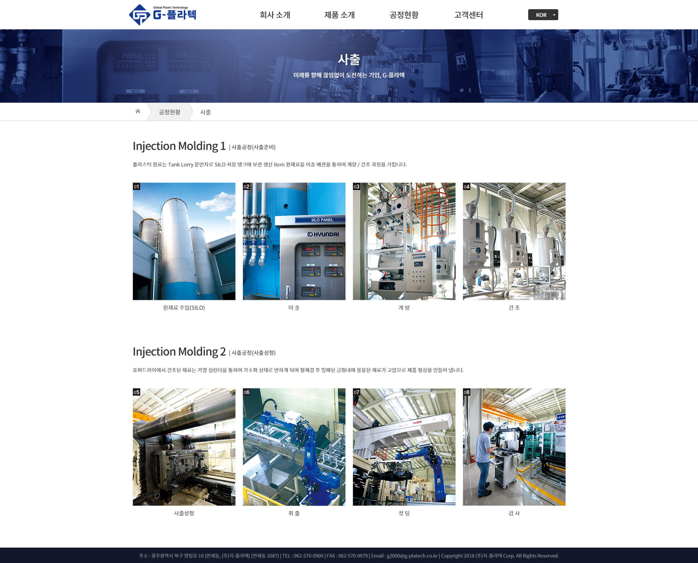
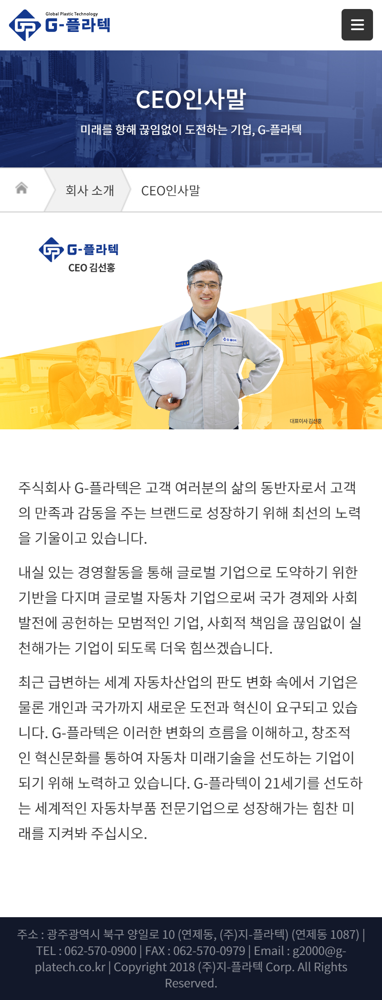
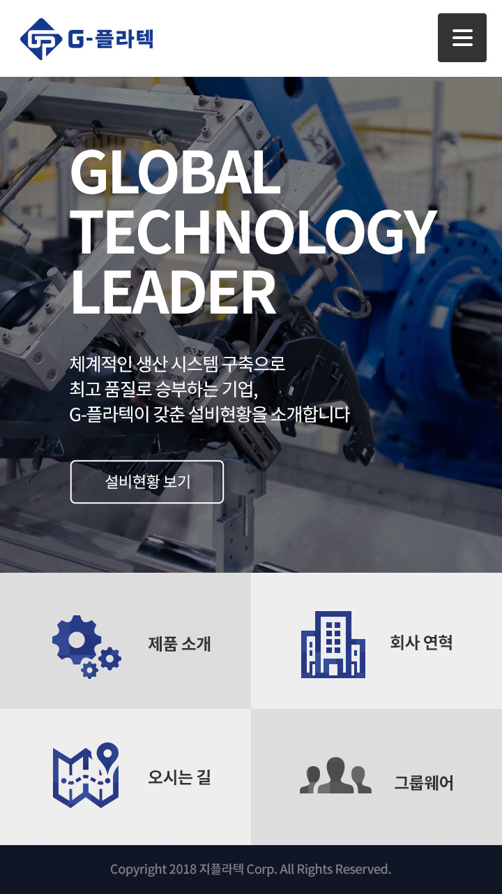
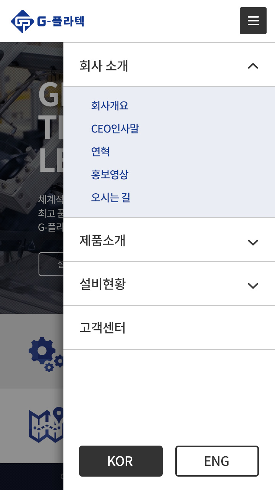
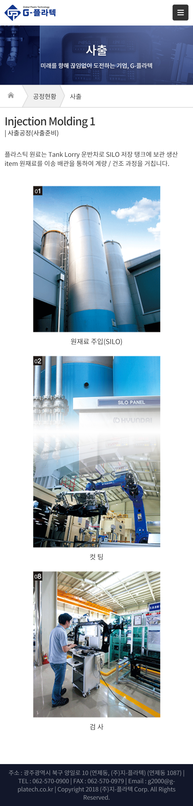

PC 메인

PC 서브

Mobile 서브

Mobile 메인


Mobile 서브
Mobile 서브

개요
메인 컬러는 기업 로고의 컬러를 그대로 사용했으며 보조 컬러로는 유저의 동작에 따라 요소가 선택되고 있음을 나타내는 기능으로 옅은 하늘색과 회색을 사용했습니다. 컨텐츠 페이지에서는 밝은 오렌지색상을 사용하여 지루함을 환기시키는 경쾌한 무드를 만들도록 했습니다.
컨텐츠가 디스플레이에 구애받지 않고 가독성 있게 잘 읽히도록 디자인되었습니다.
PC 메인에서 자동재생되는 홍보 영상은 모바일 상에서는 숨겨져 다른 컨텐츠를 탐색하는데 집중하도록 설계되었습니다.
디자인 100%
퍼블리싱 100%